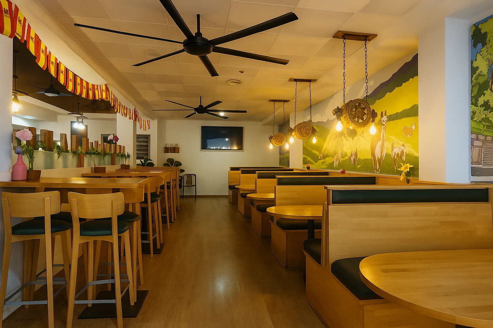

Sobre Nosotros
Conoce la fusión gastronómica e historia familiar que da vida a nuestro rincón en Ibi.
Nuestra Filosofía
L'Ermita Sumaq nació con el deseo de ofrecer un punto de encuentro familiar en Ibi. Al ubicarnos en la animada Plaza de la Foia, sabíamos que queríamos ser un espacio acogedor para todas las generaciones, especialmente para familias con niños que buscan disfrutar de una buena comida mientras los más pequeños juegan en el parque infantil situado justo al lado de nuestra terraza.
Nuestra propuesta gastronómica gira en torno a materias primas seleccionadas con mimo. Elaboramos las tapas clásicas de toda la vida y bocadillos de receta tradicional enriqueciéndolos con el espíritu Sumaq, que en quechua significa delicioso, excelente y hermoso. Esto representa la dedicación y el esmero que ponemos en cada detalle de nuestro servicio.

Galería de Fotos
Un vistazo a nuestras especialidades culinarias y a la calidez de nuestro salón comedor y terraza.